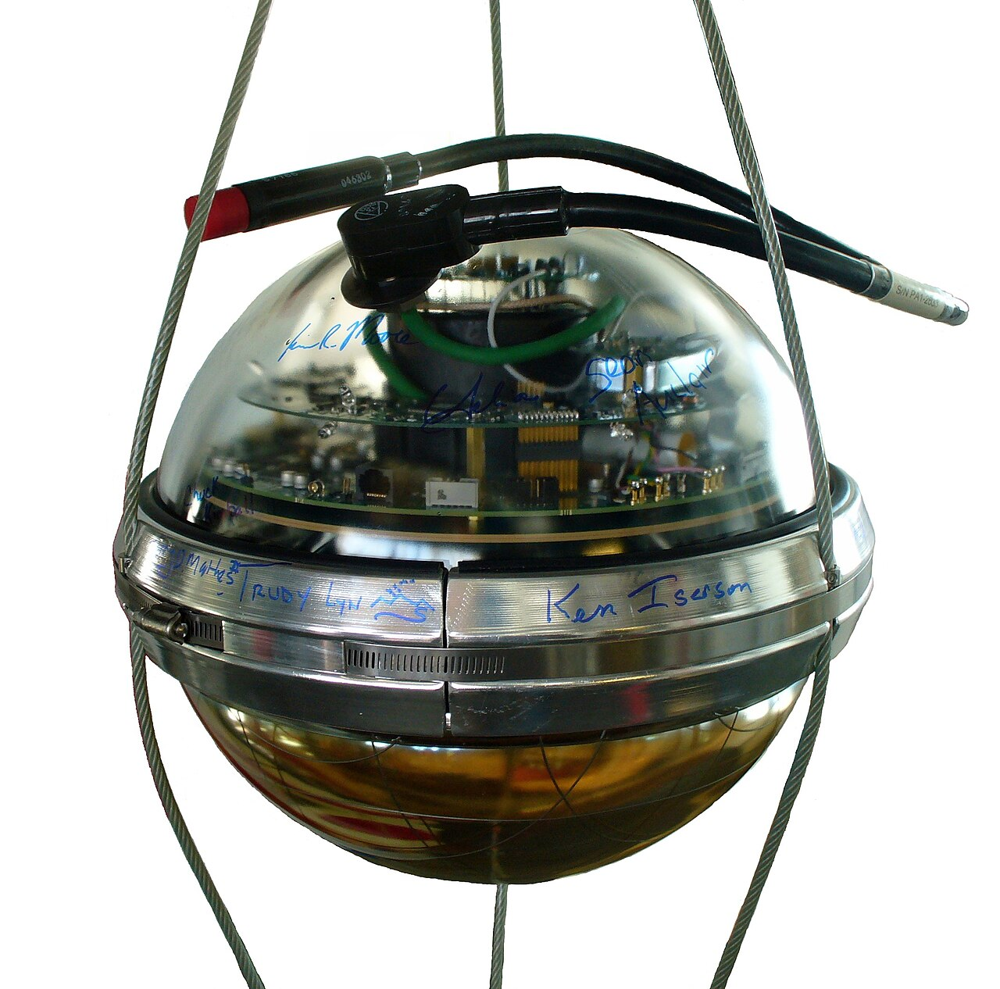
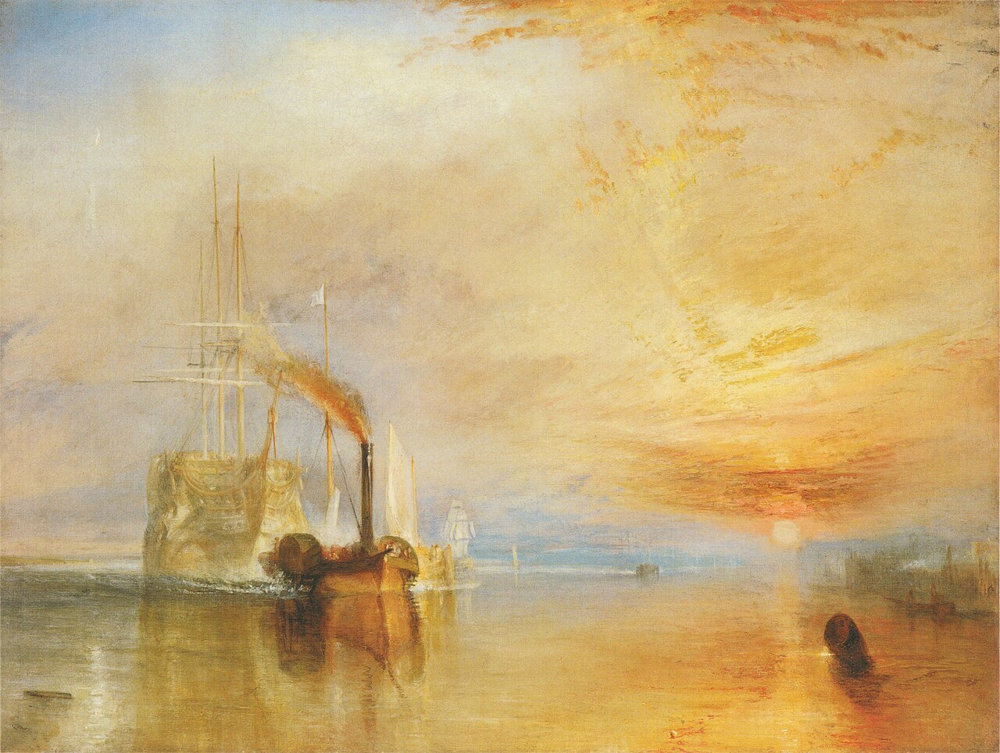
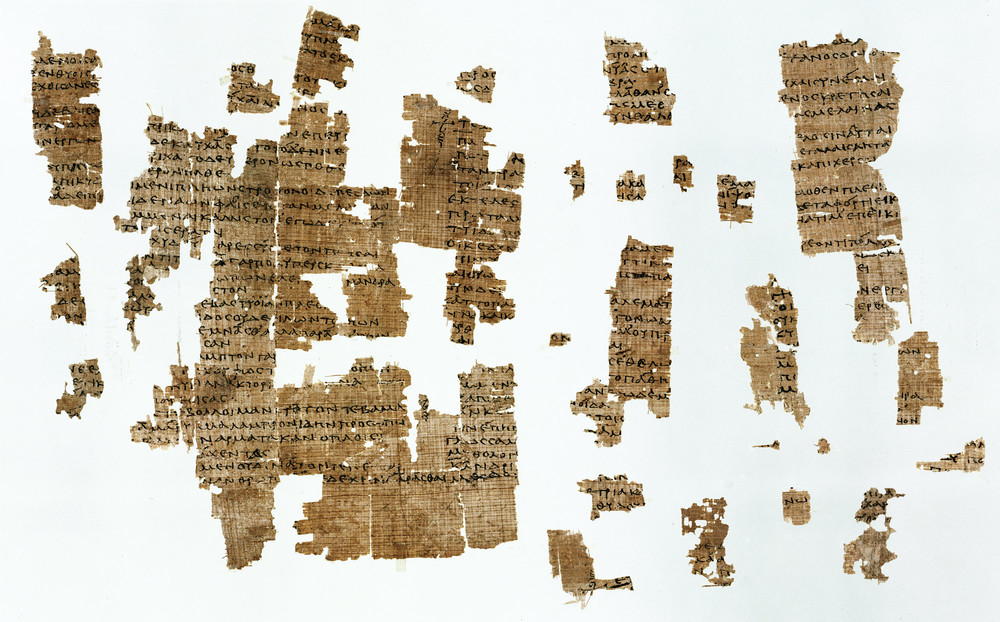

本月的文学气候由三股气团决定：诺奖把文学奖给了古典学者兼诗人；布克把六本书送进十一月的长桌；而中文小说第一次登上了国际布克的领奖台——它其实是今年五月摘的果，十月仍是我们谈中文写作出海时绕不开的名字。Three air-masses set this month's literary weather: the Nobel went to a classicist-poet; the Booker fed six novels to a November long table; and a Chinese-language novel stood on the International Booker podium — picked in May, yet unavoidable this October whenever Chinese writing's voyage outward is discussed.
10 月 8 日，瑞典学院将 2026 年诺贝尔文学奖授予加拿大作家安妮·卡森（Anne Carson），授奖语为「因其大胆而富于发明的全部著作——它与古典传统嬉戏地对话，为当代文学创造了新的形式」。这句话点出了她的两端：一端是萨福，一端是诗体的小说。《红的自传》（1998）把阿波罗尼奥斯残篇里的格律翁（Geryon，生而赤色者）交还给他自己开口说话，2013 年的《Red Doc>》又接住同一道题；另一端的《若非，冬季：萨福断章》（2002）是希英对照本，纸草断在何处，方括号就留在何处，她不缝合，也不补白。中文世界早有伏笔，《红的自传·丈夫之美》《夜》与黄茜译《若非，冬季：萨福断章》（商务印书馆）皆在架上，获奖当夜各大中文书版连夜整理卡森书单。本仓《语言叠织》奉她为圭臬，因为她演示了翻译的一等职分：不是透明玻璃，而是叠放的镜片。On 8 October the Swedish Academy awarded the 2026 Nobel Prize in Literature to the Canadian author Anne Carson, "for her bold and inventive oeuvre that, in playful dialogue with the classical tradition, has created new forms for contemporary literature". The citation names her two ends: Sappho at one, the novel in verse at the other. Autobiography of Red (1998) hands Geryon — the red-born of Apollonius' fragments — his own voice, and Red Doc> (2013) takes up the same question; at the other end, If Not, Winter: Fragments of Sappho (2002) is a facing-page edition in which the brackets stay exactly where the papyrus breaks. She neither sews the wounds nor fills them in. Chinese shelves were laid before the call: Autobiography of Red · The Beauty of the Husband, Night, and Huang Qian's 若非，冬季 (Commercial Press) — and on award night every Chinese book desk rushed out a Carson list. The Language Stacking module holds her as a standard because she shows translation's first duty: not clear glass, but stacked lenses.
瑞典学院这次赏的不是一种「古典修养」，而是处理缺如的技术：残篇不是翻译的对象，而是翻译得以成立的条件。把卡森读作「学者写诗」，就还没掂出她那句「我从中间开始」的分量。What was rewarded is not classical learning as a virtue but a technique for handling absence: the fragment is not translation's object but its condition. To read Carson as "a scholar who writes poems" is still not to have weighed her "Start in the middle, I always say."
9 月 22 日公布短名单，十月慢慢发酵。六书各有题眼。《The End of Everything》（M. John Harrison）：肯特郡，灾变之后，社会规则所剩无几，幸存者靠拾荒与「将就」过活。《The Disappearers》（Marlon James）：1980 年代牙买加一桩据传属实的袭击，排戏的男同性恋者遭追杀，一人死、一人失目，余生者多年后寻访旧伴，去清算那道伤口。《Black Bag》（Luke Kennard）：题材出自 1960 年代一场真实的心理学实验，落魄演员受雇走进大学课堂，终日套在一只黑皮袋里。《May We Feed the King》（Rebecca Perry 的处女作）：一位自谦的博物馆策展人专事复原历史场景，却在差事里掘出一位被遗忘的中世纪国王。《The Things We Never Say》（Elizabeth Strout）：五十多岁的历史教师 Artie Dam，眼看体面生活在一个家庭秘密与新总统的治国之间层层塌陷。《John of John》（Douglas Stuart）：临毕业而无业的学生回到赫布里底群岛的 Harris，旅游手册之外尽是世仇、暴力与隐秘情事，另有一份粗粝的温柔。评团主席 Mary Beard 自陈半年读完 163 部长篇，「某些时候比写一本书更耗力气」；团员是诗人 Raymond Antrobus、Pulp 乐队主唱 Jarvis Cocker 与大律师 Rebecca Liu。把歌手与律师请进评委室，并非只为制造话题：文学要重新回到公共对话，先得让评奖本身成为可读的新闻。胜者得 5 万英镑，11 月 9 日在伦敦 Old Billingsgate 揭晓。The shortlist was declared on 22 September and has been fermenting through October. Each of the six has its own hinge. The End of Everything (M. John Harrison): Kent after an undefined catastrophe, rules worn thin, the survivors scavenging and making do. The Disappearers (Marlon James): a violent attack in 1980s Jamaica, rumoured to be real — gay actors rehearsing are hunted, one killed, one blinded, and a survivor later tracks the others down to settle the wound. Black Bag (Luke Kennard): built on a genuine 1960s psychology experiment, in which a struggling actor is hired to attend lectures wearing a black leather bag. May We Feed the King (Rebecca Perry's debut): a self-effacing museum curator who rebuilds historical tableaux digs out of the job a forgotten medieval king. The Things We Never Say (Elizabeth Strout): Artie Dam, a much-loved history teacher in his fifties, watches a comfortable American life collapse around one family secret and a new president. John of John (Douglas Stuart): a final-year student with no job goes back to Harris in the Outer Hebrides, where the tourist brochures hide feuds, violence and secret sex, and a rough tenderness with them. Mary Beard, who chairs the panel, says she read 163 novels in six months and that it took more energy than writing a book; her judges are the poet Raymond Antrobus, Jarvis Cocker of Pulp and the barrister Rebecca Liu. A singer and a lawyer in the judging room is no stunt: for literature to re-enter common talk, the award must first become news worth reading. £50,000 to the winner; verdict on 9 November at Old Billingsgate, London.
六书有四书写的是灾变之后的日子：拾荒、追杀、套进皮袋、回到孤岛。今年布克把票投给仍会讲故事的小说，而非投给题材的沉重。请歌手与大律师入席，也是先让评委像听众，再像专家。Four of the six are set after the collapse: scavenging, a hunt, a bag, an island. This Booker voted for novels that still know how to tell, not for the weight of their subjects. Seating a singer and a barrister makes the judges sound first like an audience, then like experts.
五月摘桂，十月仍是最值得复述的一桩。《台湾漫游录》（楊雙子著，林 King 译）是国际布克史上第一部中文写成的获奖原作：5 月 19 日在伦敦泰特现代美术馆的涡轮大厅宣布，决审团主席 Natasha Brown 赞其有一层「引人入胜的元小说」；5 万英镑由作家与译者均分，这是主要文学奖中唯一平分的一奖。小说的体例就是一场翻译：它假托一份重见天日的 1938 年游记，日本小说家青山（Aoyama）随殖民政府资助的美食之旅漫游台湾，与台籍通译千鶴（Chizuru）相恋，每一章以一道台湾菜为名，注释与按语层层相套。原作 2020 年问世即成台湾的畅销现象，英译本 2024 年获美国国家图书奖翻译文学奖；英国版却迟到两年，据译者说，是因为没有出版社肯把她的名字与作者并列放上封面，直到 And Other Stories。作者笔名「双子」取义双生，用以纪念早逝的双胞胎姊妹——她曾替这部书做史料考据。领奖之夜她的话很简短：文学不能脱离它生长的土壤。Won in May, still worth retelling in October: Taiwan Travelogue by Yáng Shuāng-zǐ, translated by Lin King, is the first novel written in Chinese ever to take the International Booker. It was announced on 19 May in the Turbine Hall of Tate Modern, where the chair of judges, Natasha Brown, praised its "intriguing metafictional layer"; the £50,000 is split equally between author and translator — the only major literary prize that divides itself that way. The book's form is itself an act of translation: it poses as a rediscovered travel memoir of 1938, in which a Japanese novelist, Aoyama, tours Taiwan on a government-sponsored culinary trip and falls for its Taiwanese interpreter, Chizuru; every chapter is named for a Taiwanese dish, and the notes and editorial asides stack. Published in Mandarin in 2020, it was an immediate sensation in Taiwan; the English translation won the US National Book Award for translated literature in 2024, yet the British edition came two years later, because — on the translator's account — no publisher would put her name beside the author's on the cover until And Other Stories. The pen name means "twins", a tribute to the author's late twin sister, who had researched the book's historical background. On the night she kept it short: literature cannot be separated from the soil in which it grew.
真正的新闻不在「中文得胜」，而在两个技术细节：均分奖金的章程承认译者是共同作者；这本书的体裁本身即翻译，一份假造的 1938 年手稿全凭注与按语取信。中文原作第一次折桂，折的恰是「文本可以被拥有」这个旧信念。The news is not a triumph for Chinese but two technicalities: an equal split that treats the translator as co-author, and a book whose form is translation — a forged 1938 manuscript kept credible only by its notes. The first Chinese original to win this prize won it by disproving the older belief that a text can be owned.
岁末中文书市有两条暗线。其一是短篇小说的集中发力：迟子建十个与雪有关的故事集为《朋友们来看雪吧》（浙江文艺出版社），书名即是一句邀约，看雪，且要有人同看。其二是引进线把「文学 × 物质文化」做成显学：索菲·沃尔普（Sophie Volpp）《The Substance of Fiction: Literary Objects in China, 1550–1775》（哥伦比亚大学出版社，2022）的中译本由启真馆｜浙江大学出版社推出，追问小说里的器物究竟是历史实证，还是虚构的符号；其田野是 1550 至 1775 年间的中国小说，所问者是「物」在叙事里凭什么存在。诺奖引进与本土原创同月共振，是本月中文读物最值得留意的气压变化。长篇小说大奖方面，茅盾文学奖今年不在评选年，其缺席出于届例，非关漏检。Two under-currents in the year-end Chinese market. One: short fiction concentrating its force — Chi Zijian's ten snow stories now bound as 朋友们来看雪吧 (Zhejiang Literature & Art), a title that is an invitation: to watch the snow, and not alone. Two: the import line making "literature × material culture" a fashion — Sophie Volpp's The Substance of Fiction: Literary Objects in China, 1550–1775 (Columbia University Press, 2022) arrives in Chinese under Qizhen Hall / Zhejiang UP, asking whether the things inside novels are historical evidence or invented signs: fieldwork in Chinese fiction between 1550 and 1775, with the question of what lets an object exist in a narrative. Nobel imports and home-grown originals breathing in the same month — this season's truest barometric shift. Of the big long-fiction prize: the Mao Dun award is not in its cycle this year, an absence by calendar rather than by oversight.
两条线其实是一条：年末的中文书架上，「物」的位置在上升。短篇退回节气与人情，学术专著被放上畅销候选位。读者开始追问故事所依存的东西，这比任何销量数字都像新闻。The two currents are one: on Chinese shelves, the thing is rising in rank. Short fiction retreats to weather and fellow feeling; a scholarly monograph is placed in the bestseller slot. Readers asking what a story rests upon is more like news than any sales figure.
十月科学气候的最大特征：四个诺贝尔奖都颁给了能把技艺复制进生命与物质本身的工作——用光控制神经、用冰立方捕获幽灵粒子、用手性分子自我复制、用微观激励重建经济学地基。科学的「可介入性」，本月的读数最高。The October scientific weather: every Nobel went to a craft that can be copied into living matter or physical substance itself — light steering neurons, ice capturing ghost particles, chirality self-replicating, incentives rebuilding economics from its micro-foundations. Science's "intervene-ability" has rarely read higher.
10 月 5 日，卡罗林斯卡学院的诺贝尔大会将生理学或医学奖授与三人，授奖语是「for their discoveries concerning light-gated ion channels and optogenetics」，奖金 1200 万克朗均分。起点是一种单细胞藻类的趋光：Peter Hegemann（1954 年生，柏林洪堡大学）想知道 Chlamydomonas 为何朝光游去，他与 Georg Nagel（1953 年生，维尔茨堡大学）在 2000 年代初取出那个蛋白 channelrhodopsin，蓝光一照，蛋白中的通道开启，离子流入，电脉冲随之而生；把它放进任何细胞，那细胞就变得感光。Karl Deisseroth（1971 年生，斯坦福大学与霍华德·休斯医学研究所）把通道基因装进大鼠的神经细胞，2005 年发表这一突破，两年后又在活鼠脑中真正以光控制神经信号。从此研究者得以指出哪些神经回路掌管特定的记忆、情绪与行为，也在试用于恢复视力。这是沉思科学与 F3 幸福科学共用的那把新钥匙：第一人称的禅修报告与第三人称的光控记录一旦同桌，「修行的神经机制」才从隐喻变为可检验的命题。评委会主席 Per Svenningsson 说，光遗传学让人得以「以曾经只在梦中可能的样子」绘制大脑；Deisseroth 接获电话时自陈正处于「梦一般的状态」，这份名单本身便是科学史的当下时间戳。On 5 October the Nobel Assembly at Karolinska Institutet gave the medicine prize jointly to three laureates, "for their discoveries concerning light-gated ion channels and optogenetics", sharing 12 million Swedish kronor. It began with a question about light: Peter Hegemann (b. 1954, Humboldt University of Berlin) wanted to know how the single-celled alga Chlamydomonas swims toward a lamp. With Georg Nagel (b. 1953, University of Würzburg) he isolated the protein channelrhodopsin in the early 2000s: blue light opens a channel in it, ions flow in, an electrical impulse follows, and any cell carrying the protein becomes light-sensitive. Karl Deisseroth (b. 1971, Stanford University and the Howard Hughes Medical Institute) put the gene for it into rat nerve cells, publishing the breakthrough in 2005, and two years later made the light switch work in the brains of living mice. Researchers can now identify the circuits behind specific memories, feelings and behaviours, and are trying the method to restore sight. This is the very key contemplative science and wellbeing science (axes F3/F5 of our frontier scan) have been waiting for: only when first-person meditation reports and third-person optically controlled recordings share a table can "the neural mechanics of practice" leave metaphor for testable proposition. The committee chair Per Svenningsson said optogenetics allows mapping the brain "as we could once only dream of"; Deisseroth told reporters he was in a "dream-like state" when the call came — a living timestamp on the science-historical record.
今年这一奖赏的是「因果」二字。过去只能看哪块脑区在亮，如今能按下光的开关，再看行为如何改。凡以内在经验为对象的学问，早晚要面对这把开关：它不否定经验，只是让经验变得可以被干预。What is rewarded here is causality itself. A century of watching which brain area lights up, and now a switch to press, after which behaviour changes. Any discipline that takes inner experience seriously must eventually meet this switch: it does not deny the experience, it makes the experience intervenable.
10 月 6 日，物理学奖单独交给 Francis Halzen（1944 年生于比利时 Tienen，1969 年鲁汶大学博士，威斯康星大学麦迪逊分校教授），授奖语是「for decisive contributions to the IceCube Neutrino Observatory and the discovery of high-energy neutrinos of astrophysical origin」，奖金 1200 万克朗。设想提出于 1988 年：用南极的冰去追中微子。中微子无处不在，却几乎不与物相撞，穿透地球与人体而不留痕迹；偶有一次它与原子核相碰，闪出一瞬光，可由埋在透明冰层内的传感器追到。南极冰不受干扰、地质无震，于是成了探测介质的首选。宇宙中确有天然的加速器，能打出质能高出地面实验室百万倍的粒子，而其为何、其在何处、其内部机制，至今是谜；唯有中微子不改方向、不失能量地抵达我们，因而带来别处取不到的信息。一立方千米的冰被驯化为望远镜，2011 年建成，不久即见高能中微子，数年后进一步确认有些必来自太阳系之外，寻源之战自此开始。基础科学中最浪漫也最昂贵的那种「可介入性」：数据公开，人人都可从 IceCube Open Data 入手做中微子分析。诺贝尔物理学评委会主席 Mark Pearce 称他「铺就了一条通向新天文学的路」。与本仓 heaven_climate「天象 × 思想史」的双入口同构。On 6 October the physics prize went, alone, to Francis Halzen (b. 1944 in Tienen, Belgium; PhD KU Leuven 1969; University of Wisconsin–Madison), "for decisive contributions to the IceCube Neutrino Observatory and the discovery of high-energy neutrinos of astrophysical origin", with 12 million Swedish kronor. His scheme dates from 1988: use Antarctic ice to catch neutrinos. They are everywhere and hardly ever interact, passing through the Earth and through our bodies unnoticed; now and then one strikes an atomic nucleus and flashes, and sensors buried in clear glacial ice can trace that flash. Antarctic ice is free of interference and geologically quiet, so it makes the instrument. The cosmos does contain natural particle accelerators throwing out particles a million times more energetic than any laboratory here, and what they are, where they are, and how they work remain mysteries; neutrinos alone reach us without turning or losing energy, so they carry information nothing else can. A cubic kilometre of ice was domesticated into a telescope, finished in 2011; high-energy neutrinos were soon seen, and a few years later some were shown to come from far outside the solar system, which opened the hunt for their sources. The most romantic, most expensive form of intervenable basic science: the data are open; anyone may start neutrino analysis from IceCube Open Data. Mark Pearce, chair of the Nobel Committee for Physics, credits his tenacity with paving "a new kind of astronomy". Perfectly homologous to our heaven_climate's twin entry of celestial observation × history of ideas.
天文学的每次转向，换的其实都是感光介质：玻璃、底片、无线电，如今是一立方千米的冰。把整个南极当作一台仪器，等于重新定义观测：在地球上找一个足够安静的地方。Every turn astronomy has taken was a change of light-capturing medium: glass, plate, radio, and now a cubic kilometre of ice. To make a continent into an instrument is to redefine observation as the search for a place quiet enough on Earth.

10 月 7 日，化学奖授 Henri B. Kagan（1930 年生于巴黎郊 Boulogne-Billancourt，1960 年法兰西学院博士，Université Paris-Sud 荣休教授）与硤合憲三（1950 年生于广岛，1979 年东京大学博士，东京理科大学荣休教授），授奖语是「for the discovery of non-linear effects and autocatalysis in asymmetric organic synthesis」，奖金 1200 万克朗均分。所谓「同手性」（homochirality，希腊语「同」与「手」）是这个意思：氨基酸都有互为镜像的两只手，你细胞里的蛋白却只用其中一只，另一只几乎不在自然界出现。化学家在试管里做不对称反应，历来得到各半，因此这「只有一只手」的事实悬置了一个多世纪无人解释。Kagan 1986 年先走出一步，找到操控反应的新法，使一种镜像的超出量远过从前所想；硤合 1995 年的关键论文设计出第一个有可能自产同手性的反应，2003 年终于做成只生成两只镜像中的一只。此前除生命本身，无人办到过这一点。这是化学为「生命为何全选左手氨基酸」递交的候选答案之一，也是制药的地基：要与生命体相互作用的分子，往往只有一个镜像才有药效。评委会主席 Heiner Linke 称他们解开了「一个百年之谜」。On 7 October the chemistry prize went to Henri B. Kagan (b. 1930, Boulogne-Billancourt; PhD Collège de France 1960; professor emeritus, then Université Paris-Sud) and Kenso Soai (b. 1950, Hiroshima; PhD University of Tokyo 1979; professor emeritus, Tokyo University of Science), "for the discovery of non-linear effects and autocatalysis in asymmetric organic synthesis", the 12 million kronor shared. Homochirality — Greek for "same" and "hand" — means this: every amino acid has two mirrored forms, yet the proteins in your cells use only one of them, the other being almost absent from nature. Chemists running asymmetric reactions in the tube always got equal halves, which is why this fact of "only one hand" stood unexplained for over a century. Kagan took the first decisive step in 1986, finding a way to work a reaction that drove one mirror image far past any excess previously thought possible. Soai's key 1995 paper described the first reaction with the potential to be homochiral, and in 2003 he succeeded: only one of the two mirror images was formed. Before that, nothing but life itself had managed it. A candidate answer to why life chose left-handed amino acids exclusively — and a foundation for making medicines, where usually only one mirror image has the wanted effect. Heiner Linke, chair of the Nobel Committee for Chemistry, calls it the solution to "a chemical mystery that is over a century old".
题眼不在生命选了哪只手，而在「只有一只手」这件事本身需要解释。自催化给出的解释是放大：一丝偏向只要能自我复制，就长成全体。凡要说明「为何如此」的学问，都该忌妒这样一个机制。The point is not which hand life chose but that "only one hand" needed an explanation at all. Autocatalysis supplies one: amplification. A sliver of bias, once able to copy itself, becomes the whole. Any discipline that must explain why things are as they are should envy such a mechanism.
6 月 19 日公布的 2026 年京都奖只有三位得主，十月正是它沉入公众意识的季节，11 月 10 日在京都国际会馆授奖。先进科技（电子领域）归化学家宫坂力（Tsutomu Miyasaka），钙钛矿光伏的开创者；基础科学（生物科学）归海洋微生物学家 Farooq Azam；艺术哲思（音乐领域）归以声音为方法的跨媒介艺术家 Laurie Anderson。三个类别同坛，是把器件、微生物与作曲放进同一个「手艺」的筐里。京都奖之于日本，犹一座精神生活的开放院落：科技与沉思艺术同坛，与本仓「生命修行」轴（F5）互照。至于姚期智与 Robert Roeder，二人是 2021 年度得主，本次修订已将其从 2026 名单中删去（见文末「本期已订正」）。Announced on 19 June and settled into public consciousness through October ahead of the 10 November ceremony at the Kyoto International Conference Center, the 2026 Kyoto Prize has exactly three laureates. Advanced Technology (electronics) goes to the chemist Tsutomu Miyasaka, pioneer of perovskite solar cells; Basic Sciences (biological sciences) to the marine microbiologist Farooq Azam; Arts and Philosophy (the music field) to Laurie Anderson, a multimedia artist whose method is sound. Three categories on one dais, putting devices, microbes and composition in the same basket of craft. The Kyoto Prize is Japan's open courtyard of the spirit: technology and contemplative art share a podium, mirroring our life-cultivation axis (F5). Andrew Chi-Chih Yao and Robert Roeder, named in our first draft, are 2021 laureates; they are deleted from the 2026 list (see the corrections column below).
名单缩为三人，意义反倒加重：把「电子」与「音乐」并列，等于宣称二者同属一类工作，都是把形式装进物质。诺贝尔今年也在做同一件事，只是分在四个委员会里说。A shorter list, a heavier meaning: setting electronics beside music declares them one kind of work — fitting form into matter. The Nobels did the same this year, merely saying it across four committees.
10 月 12 日，瑞典皇家科学院把瑞典央行经济学奖授与 Robert E. Hall（1943 年生于加州 Palo Alto，1967 年麻省理工博士，斯坦福大学教授）与 Michael Woodford（1955 年生于麻州 Chicopee，1983 年麻省理工博士，哥伦比亚大学教授），授奖语为「for microeconomic foundations of macroeconomic stabilisation」，奖金 1200 万克朗均分。这桩工作的来历是一次失败：1970 年代的石油危机里，凯恩斯式的模型没有把失业压下去，反倒放出失控的通胀；西方过了十年低增长、高失业与高通胀并存的日子，许多人就此断定稳定政策有害无益，不如收起。二人的重建方案是换一层地基：不再拿通胀、产出、消费之间的统计关系建模，而把这些总量当作千万家庭与企业各自行为的后果推出来。模型的核心一条是「向前看」，储蓄与定价都拿对未来的打算来做，于是政府与央行把政策路径讲清楚，本身就已挪动经济。评委会主席 John Hassler 称这份工作替今日各国央行与政府所用的模型立下「一个稳固的理论地基」。Hall 最锋利的那把刀另有其名：消费的随机游走。消费的变化之所以不可预测，正因为人按预期花钱，不按当期收入花钱。与本仓 economics_cross_culture 相切处即在此——激励设计从来不止是数学，也是一种关于人性的叙事体裁。On 12 October the Royal Swedish Academy of Sciences awarded the Sveriges Riksbank Prize in Economic Sciences to Robert E. Hall (b. 1943, Palo Alto, CA; PhD MIT 1967; Stanford University) and Michael Woodford (b. 1955, Chicopee, MA; PhD MIT 1983; Columbia University), "for microeconomic foundations of macroeconomic stabilisation", the 12 million kronor shared equally. The history of this work is a history of failure: through the oil crises of the 1970s the Keynesian models did not press unemployment down but let inflation out, the West lived a decade of low growth with high unemployment and high inflation at once, and many concluded that stabilisation policy did more harm than good and had best be retired. The two rebuilt it on another floor: instead of modelling the statistical links between inflation, output and consumption, they derive those aggregates as the consequence of what households and firms each do. The hinge is forward-looking behaviour — saving and price-setting are decided against the future — so a government or central bank that states its policy path has already moved the economy. John Hassler, chair of the prize committee, says their work gave "a stable theoretical foundation" to the models now used by central banks and governments worldwide. Hall's sharpest blade has another name: the random walk of consumption, unpredictable exactly because people spend on expectations rather than on this period's income. Here our economics_cross_culture module bites: incentive design is never only mathematics, it is a genre of storytelling about human nature.
这一奖先是替一门学科承认失败，再示范失败如何改造成地基：总量的相关不许当结论用，模型必须从人的预期里长出来。其中还有第二层教训——既然公众对未来的想象本就是政策的一部分，含糊其辞的央行等于自废武功。The prize first admits a discipline's failure, then shows how a failure becomes a foundation: correlations among aggregates may not stand as conclusions, and models must grow out of what people expect. There is a second lesson inside it — since the public's image of the future is already part of policy, a central bank that speaks vaguely has disarmed itself.
摄政公园的帐篷（市场）、蒂赛德的 MIMA（公共艺塾）、大都会与保利（舞台）。三副面孔合起来问同一个问题：艺术如何继续把「共同在场」组织起来。Tents in Regent's Park (market), MIMA in Teesside (civic studio), the Met and Beijing's Poly (stage). Three faces of one question: how art as co-presence keeps being organised.
Frieze London 与 Frieze Masters 同在摄政公园，帐篷对望。前者 2003 年由 Amanda Sharp 与 Matthew Slotover 创办，是本世纪最年轻的一级艺博会；后者 2012 年开办，专售「一切在它之前的作品」。今年官方口径是 172 家画廊、来自 42 个国家与地区，会期 10 月 14–18 日；按自家统计，其年度观众逾 9 万。更值得文化学者侧目的是外场：72 位艺术家自 10 月 29 日起接管公共空间，直至 2027 年 2 月。艺术离开白盒子而进入通勤路线，是本月最实在的一场公共性实验。Frieze London and Frieze Masters share Regent's Park, tents facing each other. The first was founded in 2003 by Amanda Sharp and Matthew Slotover, the youngest of the century's tier-one art fairs; Masters opened in 2012 to sell "everything made before it". This year's official figure is 172 galleries from 42 countries and regions, open 14–18 October, and by the fair's own count it draws more than 90,000 visitors a year. The more telling frame for a cultural scholar is the outer one: 72 artists take over public space from 29 October through February 2027. Art leaving the white cube for the commute is this month's most material experiment in publicness.
艺博会是艺术市场最坦白的形式：把作品摆进帐篷，按天计价。新意不在场内，而在那 72 件被放到通勤路上的作品——它们要让不看展的人也撞见艺术。二十年里，Frieze 把「收藏」办成了城市节日，如今它想把「公共」也一并办进来；判断留给明年二月，看那些作品是否真被走路的人看见。An art fair is the market's most candid form: works in a tent, priced by the day. The novelty is not inside but outside, among the 72 works set on the commute so that people who never enter a gallery may still meet art. In twenty years Frieze turned collecting into a civic festival; now it wants to organise publicness as well. Judge that in February, by whether pedestrians actually saw it.
特纳奖 1984 年设立，以 J.M.W. 透纳（1775–1851）命名，每年颁给一位英国艺术家「一次出色的展览或其他作品呈现」，也是最能引起争论的艺术奖之一。今年 4 月 23 日在泰特不列颠公布四位提名者：Simeon Barclay、Kira Freije、Marguerite Humeau、Tanoa Sasraku；展览 9 月 26 日开幕，延至 2027 年 3 月 29 日，场地在蒂赛德大学旗下的 MIMA（米德尔斯堡现代艺术博物馆），免票入场——这是特纳奖第一次办进大学。得奖者 12 月 10 日在 MIMA 的授奖典上揭晓，奖金 25,000 英镑，其余三人各得 10,000 英镑。四件被提名之作各有各的路径：Barclay 靠一小时长的口述表演《The Ruin》，现场配以鼓与号，说哈德斯菲尔德的成长与北英格兰的工业风景；Freije 在韦克菲尔德美术馆把金属骨架与石膏面孔排成一座剧场；Humeau 的《Torches》在哥本哈根 ARKEN 与赫尔辛基 HAM 展出，虚构物种与失落文明共处一室，是四人中最贴近本仓跨学科口味的一个；Sasraku 在伦敦 ICA 用企业视觉语言讲石油的政治与军事史。评委会由泰特不列颠馆长 Alex Farquharson 主持，成员为 Sarah Allen、Joe Hill、Sook-Kyung Lee 与 Alona Pardo。本栏保留十月判断，待十二月更新。The Turner Prize, founded in 1984 and named after J.M.W. Turner (1775–1851), is given each year to a British artist "for an outstanding exhibition or other presentation of their work" — and is among the most argued-over prizes in the visual arts. The four nominees were announced at Tate Britain on 23 April: Simeon Barclay, Kira Freije, Marguerite Humeau and Tanoa Sasraku. The exhibition opened on 26 September and runs to 29 March 2027 at MIMA, the Middlesbrough Institute of Modern Art, which belongs to Teesside University — the first Turner Prize staged inside a university — with free admission. The winner is declared at MIMA on 10 December: £25,000, with £10,000 to each of the other three. The nominated works take four different roads. Barclay for The Ruin, an hour-long spoken-word performance with live percussion and horn, drawn from a Huddersfield upbringing and the industrial landscape of northern England; Freije for Unspeak the Chorus at The Hepworth Wakefield, a theatrical tableau of bare metal armatures and stonecast faces; Humeau for Torches at ARKEN Copenhagen and HAM Helsinki, invented species and lost civilisations in one looped cycle of light and sound — the closest of the four to this repo's inter-disciplinary palate; and Sasraku for Morale Patch at the ICA London, recent political and military histories of oil told in the visual language of the corporate world. Alex Farquharson, Director of Tate Britain, chairs a jury of Sarah Allen, Joe Hill, Sook-Kyung Lee and Alona Pardo. This column holds its October judgement and will revise it with December's own.
把奖搬到伦敦之外，早已不是新鲜事；新鲜的是这次搬进大学，展览因此同时是一门课。四人里有两人以身体与装置追问「谁的历史」，一人追问物种与文明，一人追问石油账本——今年特纳奖的公分母不是媒介，而是追问本身。免票、长达六个月的展期与一份当场揭晓的名单，也把这个奖重新定义为一次公共教学。Moving the prize outside London stopped being news years ago; moving it into a university is news, because the show doubles as a course. Two of the four interrogate whose history gets shown, one interrogates species and civilisation, one interrogates the oil accounts — this year's Turner common denominator is not a medium but the interrogation. Free entry, a six-month run and a verdict read out on site redefine the prize as public teaching.

10 月 19 日，大都会歌剧院世界首演《林肯在阴间》：Missy Mazzoli 作曲、Royce Vavrek 编剧，取自 George Saunders 2017 年获布克奖的同名小说，演出排至 11 月 14 日，其间含一场万圣节夜场。戏情只占一夜：林肯九岁的儿子威利下葬之后，墓园里的亡魂——有姓名的与无姓名的——围着一个不肯离去的孩子说话。Yannick Nézet-Séguin 指挥，Lileana Blain-Cruz 导演，Peter Mattei 饰林肯，Christine Goerke 饰教士，Anthony Roth Costanzo 饰 Elise Traynor 小姐，Stephanie Blythe 饰 Baron 夫人，Everett Sobers 饰威利。这是大都会史上第一出由女性作曲家受其独家委约并独家首演的主台歌剧；Mazzoli 登上该台的作品位列第五，2018 年她与 Jeanine Tesori 同成该院首批女性委约对象。演出适值美国建国二百五十周年，剧院把「国父」放回一个丧子的父亲的位置上。同一旬里，北京保利剧院 10 月 18 日由中国爱乐乐团演出亨德尔的《朱利叶斯·凯撒》。东西两个舞台同时把历史的幽灵请进音乐厅：纽约请的是丧子之痛里的林肯，北京请的是权谋与柔肠并存的凯撒。剧场仍是文明处理记忆的主要器官。On 19 October the Metropolitan Opera gave the world premiere of Lincoln in the Bardo, music by Missy Mazzoli, libretto by Royce Vavrek, after George Saunders' Booker Prize-winning 2017 novel; performances run to 14 November and include a Halloween night. The plot occupies a single evening: after the funeral of Abraham Lincoln's nine-year-old son Willie, the dead of the graveyard — named and nameless — keep talking around a child who will not leave. Yannick Nézet-Séguin conducts; Lileana Blain-Cruz directs; Peter Mattei is Lincoln, with Christine Goerke as the Reverend, Anthony Roth Costanzo as Miss Elise Traynor, Stephanie Blythe as Mrs Baron, and Everett Sobers as Willie. It is the first main-stage opera by a woman that the Met has both commissioned and premiered on its own. Mazzoli is only the fifth woman to have a work on that stage; in 2018 she and Jeanine Tesori became the company's first female commissionees. The run falls in the United States' 250th-anniversary year, and the house sets a founding father down in the place of a bereaved father. In the same ten-day span, China Philharmonic stages Handel's Giulio Cesare at Beijing's Poly Theatre on 18 October. Two stages, east and west, seat the ghosts of history in the concert hall at once: New York takes Lincoln in his grief, Beijing Caesar in his policy and his tenderness. Theatre remains a civilisation's chief organ for processing memory.
原著的写法本就是不连续的：一百多段引文、双栏排印、说话者大多无名。把它改成歌剧不是降格，而是复原——合唱队原本才是主角。更值得一问的是这座剧院为何等到 2026 年才把这样的委约交到一位女性手上：一百四十余年里它不缺剧目，缺的是名单。而选一部关于丧子与亡魂的书赶上建国二百五十周年，等于替国史选定了一种起手式——先承认死者仍在场。Saunders' novel is already discontinuous: some hundred-odd quoted sections, set in two columns, most of its speakers nameless. Turning it into an opera is no downgrade but a restoration — the chorus was always the protagonist. The worthier question is why the house waited until 2026 to put such a commission in a woman's hands; in a hundred and forty-odd years it never lacked repertoire, only a list. And to stage a book about a dead child in the semiquincentennial year is to pick an opening gesture for national history: first admit that the dead are still present.
10 月 23–25 日当周北美票房：《Clayface》以 2,400 万美元登顶，《You Can See Everything》居次得 1,950 万，《Wildwood》1,180 万列第三，《Street Fighter》860 万第四，《Wicker》580 万第五。冠军那部是 DC 在 James Gunn 与 Peter Safran 主理下的第三部院线片：华纳把漫画反派拍成 R 级身体恐怖，3,458 家影院开画，成本只有 4,400 万，Tom Rhys Harries 饰 Matt Hagen——一个被黑道毁容、去做实验性面部手术的上升期影星；观众给出 A− 的 CinemaScore，海外另取 1,900 万。在《Supergirl》以 1.7 亿成本只换回 1.26 亿全球之后，DC 需要的正是「小成本也能回本」这条证据。第二名才是本月真正的事件：A24 那部跟着 Elizabeth Holmes 的「元纪录片」，Nathan Fielder 与 Lance Oppenheim 合导，片长近三小时，九月在特柳赖德以事先毫无宣传的方式世界首演，据评者说连叙事蓝图都没有；开画 855 家影院得 1,560 万，次周扩到 2,655 家不降反升到 1,950 万，两周累计 4,510 万，而 A24 投入的是传闻中的 700 万。退场调查称九成首周购票者「一定会推荐」，约七成购票者不足 35 岁。它已进入影史最卖座纪录片之列，但要越过《This Is It》2009 年的 2.67 亿还得靠海外；若获最佳影片提名，它将是第一部获此奖项提名的纪录片。第三名的《Wildwood》出自波特兰定格动画厂 Laika，由其执行长 Travis Knight 执导，成本 1 亿、开画 1,180 万，拿到 A 级评分仍难回本；派拉蒙的《Street Fighter》次周暴跌 72%，仅得 860 万，两周国内累计 4,690 万，而它的成本约 8,000 万。同一周，Taika Waititi 改编 Kazuo Ishiguro 小说的《Klara and the Sun》在 880 家影院只收 72.5 万。流媒体侧，Variety 点名的十月片单里《The Invite》《Disclosure Day》《Evil Dead Burn》各安其位。North American box office for the 23–25 October weekend: Clayface took number one on $24M, You Can See Everything second on $19.5M, Wildwood third on $11.8M, Street Fighter fourth on $8.6M and Wicker fifth on $5.8M. The topper is DC's third theatrical release under James Gunn and Peter Safran: a comic-book villain turned R-rated body horror, opened on 3,458 screens against a $44M budget, with Tom Rhys Harries as Matt Hagen — a rising actor who takes experimental facial surgery after a mob boss disfigures him. Audiences gave it an A− CinemaScore and it added $19M abroad. After Supergirl returned just $126M worldwide on a $170M production cost, what DC needed was evidence that a small picture can still pay. The second place is the month's real event: A24's "meta-documentary" following Elizabeth Holmes, co-directed by Nathan Fielder and Lance Oppenheim, nearly three hours long, given a world premiere at Telluride in September with no advance publicity and — by reviewers' account — no narrative blueprint. It opened in 855 theatres for $15.6M, widened to 2,655 the next weekend and rose to $19.5M, reaching $45.1M in two weeks against an outlay A24's backers put at $7M. Exit polling had nine in ten first-week buyers definitely recommending it, and roughly seven in ten under 35. It already ranks among the highest-grossing documentaries ever, though passing Michael Jackson's This Is It ($267M in 2009) would require the overseas markets; a best-picture nomination would make it the first documentary ever so named. Third-place Wildwood comes from Portland's stop-motion house Laika, directed by its chief executive Travis Knight on a $100M budget: an A CinemaScore and an $11.8M opening still leave profit unlikely. Paramount's Street Fighter fell 72% in its second weekend with $8.6M, holding $46.9M in two weeks. In the same week Taika Waititi's adaptation of Kazuo Ishiguro's Klara and the Sun took only $725,000 across 880 theatres. On streaming, Variety's October list keeps The Invite, Disclosure Day and Evil Dead Burn in place.
把前十竖着读一遍，本月的事实不是「超英退潮」这类省事的说法，而是票价的重新分配：一部事先不宣传的纪录片赢过了漫画片，而同一周，一部诺贝尔奖得主的小说改编片只讨到 72.5 万，那部纪录片一个周末的数目是它的二十七倍。观众并非拒绝虚构，而是拒绝替他们解释清楚的虚构：Holmes 那片卖的是「你自己去看」，其余各片卖的是「我们已经替你看好了」。Fielder 把访问做成陷阱、把陷阱做成喜剧，与 A24 的宣发本是同一种手艺——先保密，再让观众替它说话。最该记下的是那七成的年轻人：他们进影院不是为了大场面，是为了第二天有人可说。Read the top ten vertically and the month says something other than "superhero fatigue": a redistribution of what a ticket is bought for. An unpublicised documentary beat a comic-book film, and a Nobel laureate's novel adapted by a famous director took $725,000 that same weekend — one twenty-seventh of the documentary's figure. Audiences are not rejecting fiction; they are rejecting fiction that explains itself for them. The Holmes film sells "go see and decide"; the rest sell "we have already decided for you". Fielder builds interviews as traps and traps as comedy, which is the same craft A24 used in promotion: keep it secret, then let the audience do the talking. The number to remember is the seven in ten under 35 — in the theatre not for spectacle but for someone to talk to the next day.
世界建筑节 2008 年创办，自陈为最大的现场评审建筑设计奖活动：报名先经筛选成入围名单，入围者到大会当众讲解，评委当场提问、当日开票。今年入围 416 项，据大会口径自六百多件报名中筛出，含 Foster + Partners、Herzog & de Meuron、Studio Gang、RSHP 等事务所，类别横跨已建成与未来两大线下的住宅、教育、健康、酒店、体育、文化与「创意再生」。大会 11 月 18–20 日在布劳沃德会议中心（大迈阿密区）举行，这是它在美国的第二年——2025 年初办于迈阿密滩会议中心；末日由超级评审团在类别冠军之中定出「世界年度建筑」。建筑师在评委室里当众讲解自己的图，是建筑界独有的仪式：判决书不公开合议，同行评议不具名，医院的会诊不直播，唯有建筑把评审做成公开演出。评审公开化本身就是一种认识论姿态，与本仓「知识共产」（E1）原则同调。The World Architecture Festival, founded in 2008, calls itself the largest live awards event for architects and designers: entries are shortlisted first, then the finalists present their work in front of juries who question them in the room and vote the same day. This year's shortlist is 416 projects, selected from more than six hundred entries by the festival's own account, with Foster + Partners, Herzog & de Meuron, Studio Gang and RSHP among them, across categories that run from housing, education, health, hotel, sports and cultural to creative re-use, under both the completed and the future tracks. The festival sits at the Broward County Convention Center in greater Miami on 18–20 November, its second American year after a first at the Miami Beach Convention Center in 2025; a super-jury then picks the World Building of the Year from the category winners. Architects defending their drawings before an open crit is architecture's own ritual. Judgments are not deliberated in public elsewhere: peer review is anonymous, a diagnosis is not broadcast. The publicity of judgement is an epistemic stance, in key with our co-production principle (axis E1).
公开评审的代价是表演性：会讲的占便宜，沉默的吃亏，这与学术界匿名审稿的顾虑恰好相反。建筑界甘愿付这笔代价，因为它的成品本就要在公众眼前站几十年。更值得记的是类别的安排——「创意再生」与住宅被摆在酒店、文化旁边，等于把当下最要紧的两件事（既有建筑的改造、住得起的房子）写进了奖项的本体。一个奖项的品味不在谁得奖，而在它肯为哪一类门开。Open crits cost performance: those who speak well gain, those who are silent lose — the exact anxiety that anonymous peer review is built to avoid. Architecture pays that price willingly, because its work must stand in public for decades. The category list is the more telling document: creative re-use and housing sit beside hotel and cultural, which writes the two pressing tasks of the present (retrofitting what already stands, building housing people can afford) into the award's own ontology. A prize's taste is not shown by who wins it but by which doors it opens.
音乐轴本月材料稀疏，我们不臆造热闹，只登记回得去源头者：一张仍在榜首的专辑、一张十月新辑（Billboard 年历预告）、一位与修行同坛的艺术家。The music shelf is thin this month; we will not manufacture a clamour. What follows is only what we can trace: an album still at number one, an October release flagged in Billboard's calendar, and one artist honoured on the same dais as cultivation.
10 月 24 日那一期 Billboard 200，《The Life of a Showgirl》第十五周（非连续）登顶：统计周期截至 10 月 15 日，单周 8 万 7 千张销量当量，环比降 7%。这是 Taylor Swift 的第十二张录音室专辑，2025 年 10 月 3 日经 Republic Records 发行，标准曲序十二首；此番回冠距 9 月 25 日的加版不过数周，新补四首未发行歌，其中包括 Hot 100 冠军单曲《Patient Zero》。拆开来看更要紧：流媒体当量 4 万 7 千，降 28%；实体销售 3 万 7 千，反升 38%——官方商店补货之后，它在 Top Album Sales 另拿下第九周榜首。前五名其余四席全是旧冠军：Olivia Rodrigo 6 万 5 千、Morgan Wallen 5 万 5 千、Ella Langley 5 万 3 千、Noah Kahan 4 万 5 千。Showgirl 意象把上世纪巡演的脂粉气接到流媒体时代的个人神话，这是流行乐作为「时代自传」的标准样本。On the Billboard 200 dated 24 October, The Life of a Showgirl logged its fifteenth non-consecutive week at number one: 87,000 equivalent album units in the tracking week ending 15 October, down 7%. It is Taylor Swift's twelfth studio album, released on 3 October 2025 through Republic Records with twelve songs in the standard running order; this return to the top follows a deluxe reissue on 25 September that added four previously unreleased tracks, among them the Hot 100 number one "Patient Zero". The split matters more than the total: streaming-equivalent units came to 47,000, down 28%; physical sales came to 37,000, up 38% — after a restock of certain editions in Swift's own store, which also handed her a ninth week at number one on Top Album Sales. The other four places in the top five are all former number ones: Olivia Rodrigo at 65,000, Morgan Wallen at 55,000, Ella Langley at 53,000, Noah Kahan at 45,000. The Showgirl image splices last century's tour-paint onto streaming-era personal myth — pop as the age's autobiography, in standard sample.
此刻的榜单量的不是喜好，而是库存与版本的调度：一张发行满岁的专辑还能靠补货把实体销量抬上去，流媒体那头仍在退。前五名都是旧冠军，等于宣告这个秋天没有新的统治者，只有管理得最好的旧资产。Swift 的手艺素来在叙事，如今叙事之外多了一层供应链——这是唱片工业教给所有歌手的最后一课：要想还在榜首，就得一直有货。What the chart is measuring now is not taste but the choreography of inventory and editions: an album a year old can lift its sales on a restock while its streams fall. A top five made entirely of former number ones declares that this autumn has no new ruler, only the best-managed old assets. Swift's craft has always been narrative; a supply chain has been added to it. This is the record industry's last lesson for every singer: to stay at number one, stay in stock.
Billboard 2026 发行年历把十月的最后一周留给两桩旧名。10 月 30 日同日发行：Nickelback 的第十一张录音室专辑《Everything Under the Sun》（Virgin Music Group），与工业金属乐队 Ministry 自陈的第十七张也是最后一张专辑《Hate to Go (Take Out or Delivery)》（Cleopatra Records）——后者由 Al Jourgensen 与 Paul Barker 签予该厂，身后还排着 2027 年的告别巡演。Nickelback 这回到手十二首，是自 1996 年初辑《Curb》以来曲数最多的一张，距上一辑《Get Rollin'》（2022）整四年；主唱 Chad Kroeger、吉他 Ryan Peake、贝斯 Mike Kroeger、鼓手 Daniel Adair 四人未变。开门曲《Rattle the Cage》请进现任 Mötley Crüe 吉他手 John 5 独奏，《Lift Somebody Up》聚了 Sammy Hagar 与 Brent Smith 两主唱、Zach Myers 与 Joe Bonamassa 两吉他、Tommy Lee 与 Charlie Benante 两鼓；《Technicolor Steamboat》由演员 Ryan Reynolds 开场，学着 Gene Wilder 的 Willy Wonka 说一句「你会喜欢的」。美联社的评者给三星半，断语是「在他们自己的公式之内，把能拿的都拿了」。同旬另有 My Chemical Romance《The Black Parade》二十周年重刊（10 月 23 日）与 Queens of the Stone Age 的《Perfecth》。华语剧场侧：10 月 18 日中国爱乐在保利剧院演出亨德尔（见「舞台」条），上海大剧院 22、24 日两连演。古典、摇滚、工业——三种风格在同一旬里，各自破一次「过气」的预言。Billboard's 2026 release calendar gives the last week of October to two old names. Released on 30 October the same day: Nickelback's eleventh studio album, Everything Under the Sun (Virgin Music Group), and Ministry's seventeenth and — the band says — final album, Hate to Go (Take Out or Delivery) (Cleopatra Records), the latter signed by Al Jourgensen and Paul Barker to that label, with a farewell tour still scheduled for 2027. Nickelback's record runs to twelve songs, its longest since the twelve-track debut Curb of 1996, and comes four years after Get Rollin' (2022), with the same four players: Chad Kroeger, Ryan Peake, Mike Kroeger and Daniel Adair. The lead-off "Rattle the Cage" brings in current Mötley Crüe guitarist John 5 for the solo; "Lift Somebody Up" stacks two vocalists (Sammy Hagar, Brent Smith), two guitarists (Zach Myers, Joe Bonamassa) and two drummers (Tommy Lee, Charlie Benante); on "Technicolor Steamboat" the actor Ryan Reynolds opens in the voice of Gene Wilder's Willy Wonka, promising "you're going to love this". The Associated Press critic gave it three and a half stars and the verdict that inside their own formula the band took everything on the table. Also in the fortnight: My Chemical Romance's The Black Parade at its twentieth anniversary (23 October) and Queens of the Stone Age's Perfecth. On the Chinese stage side: China Philharmonic's Handel at the Poly Theatre on 18 October (see Stage) and two Shanghai Grand Theatre dates, the 22nd and 24th. Classical, rock, industrial — three genres refuting their own obituaries inside one fortnight.
一支乐队在第十一辑里请进六位客人，另一支宣布收山，两者同日发行，恰是摇滚此刻的两副面孔：一边用联名抵抗「公式」的名声，一边用告别把四十多年的噪音盖棺。批评者说 Nickelback 三十年不变，这话说反了——不变的是听众仍愿为熟悉的音色再付一次票钱，而这在流媒体时代恰恰最稀缺。Ministry 的收山则说明另一件事：工业金属靠挑衅体制起家，如今体制已经不接招，反抗便失了对手。老团退场所留下的不是空位，是一种无人应答的语气。One band invites six guests onto its eleventh album; the other calls it quits — released the same day, these are rock's two faces now: one answers the charge of formula with collaborations, the other closes forty-five years of noise with a farewell. The usual complaint that Nickelback have not changed in three decades inverts the point: what has not changed is that listeners still pay twice for a familiar tone, and in streaming that is the scarce item. Ministry's retirement says something else. Industrial metal made its name by baiting the system; the system no longer takes the bait, and opposition loses its counterparty. What a retiring band leaves behind is not a vacancy but a tone nobody answers.
当年在电话说明书里朗读、让机器人替自己说话的那位艺术家，拿到了日本最高的民间荣誉。2026 年京都奖于 6 月 19 日公布，「思想与艺术」奖授予 Laurie Anderson（1947 年生于芝加哥），评奖语称她「把电子媒体用于自己的声音与身体，熔实验之声与流行声于一炉，确立了独特的多媒体表演形态」。她的履历本身就是跨学科的样本：Barnard 学院艺术史学士（1969）、哥伦比亚大学雕塑硕士（1972），1970 年代在纽约的当代艺术场与朋克、新浪潮之间找到说法的方式；1981 年单曲《O Superman》把自己的人声做成极简循环，竟打到英国流行榜第二，1982 年《Big Science》让她入门将唱片，1983 年八小时长的《United States I–IV》把讲述、影像、提琴与键盘并于一桌。她与 beat 作家 William S. Burroughs、媒体艺术家白南准、作曲家 Philip Glass 以及终身伴侣 Lou Reed 共事，站在前卫与流行之间做中间人。2002 年成为 NASA 首位驻馆艺术家，遂有 2004 年的《The End of the Moon》；2018 年与 Kronos 四重奏合作的《Landfall》出自身历 Sandy 飓风的声音记忆，2024 年的《Amelia》沿着飞行员 Amelia Earhart 的最后一次飞行。奖项之外她另有名单：2007 年 Gish 奖、2017 年沃尔夫艺术奖、2021 年哈佛 Charles Eliot Norton 讲座、2024 年格莱美终身成就奖与美国文艺学会音乐金奖。授奖典 11 月 10 日在京都国际会馆，由 Princess Takamado 亲临；次日她的纪念演讲题为〈A Sky Full of Teachers〉，免费公开、一千五百席先到先得。她接奖时写道：「以最深的谦抑领受……承蒙看见那个想被人理解、也想对人有用的心愿。」并把功劳归于「教我如何生活、如何去爱、如何作艺的众多老师」。本栏登记此事，是因为它与本月诺奖文学（卡森）、F5 修行轴连成一条暗线：把创作当修行、把修行当创作。The artist who once read a telephone manual aloud and let a robot do her talking has received Japan's highest civilian honour. The 2026 Kyoto Prize, announced on 19 June, gave its Arts and Philosophy award to Laurie Anderson (b. Chicago, 1947), citing her as an artist who "established a unique form of multimedia performance by deploying electronic media to fuse experimental and pop sounds with her voice and body". Her curriculum vitae is itself an interdisciplinary specimen: a BA in art history from Barnard (1969), an MFA in sculpture from Columbia (1972), then the 1970s New York art world, punk and new wave as the place where she found her way of speaking. Her 1981 single "O Superman", built on an extremely simple loop of her own voice processed into synthetic sound, reached number two on the British pop charts; Big Science brought her a major label in 1982; United States I-IV, premiered in 1983, ran eight hours and set narration, video, violin and keyboard on one table. She worked with the beat writer William S. Burroughs, the media artist Nam June Paik, the composer Philip Glass and her lifelong partner Lou Reed, acting as a mediator between avant-garde and popular music. NASA's first artist-in-residence in 2002, she turned the experience into The End of the Moon (2004); Landfall (2018), with the Kronos Quartet, came out of her experience of Hurricane Sandy, and Amelia (2024) follows the final flight of aviator Amelia Earhart. The prizes outside the Kyoto list themselves: the Gish Prize (2007), the Wolf Prize in Arts (2017), Harvard's Charles Eliot Norton Lectures (2021), the Grammy Lifetime Achievement Award and the Gold Medal for Music of the American Academy of Arts and Letters (both 2024). The presentation is on 10 November at the Kyoto International Conference Center in the presence of Her Imperial Highness Princess Takamado; the next day her commemorative lecture is titled "A Sky Full of Teachers", free to the public, 1,500 seats first-come. Accepting, she wrote that she took the prize "in the spirit of deepest humility", grateful that "this dream of being understood" had been acknowledged, and gave the credit to "the many teachers who have shown me ways to live, love and make art". This column registers the event because it threads together this month's Literature Nobel (Carson) and our contemplative-praxis axis (F5): making as practice, practice as making.
京都奖把「思想与艺术」颁给一位用人声做循环、把身体与机器同置一台的艺术家，这是一次明确的裁定：技术不止是媒介，也可以练成心术。Anderson 五十年只有一法——先把自己变成乐器，再让机器替它说话；《O Superman》里那个循环的「是」，与今日人人用变声软件作自我介绍的场面，本出同源。她真正动人的地方不在预言未来，而在把工具用旧：合成器、采样、投影，处理的仍是最老的两件事：失去与追问。所谓修行，大抵就是把一件工具用到能听见自己。That the Kyoto's Arts and Philosophy prize should go to an artist who loops her own voice and sets body and machine on the same stage is a deliberate ruling: technology is not merely a medium, it can be cultivated as a discipline of the mind. Anderson has used one method for fifty years — first turn yourself into an instrument, then let the machine speak for it. The looping "yes" of "O Superman" and today's habit of introducing oneself through a voice filter are the same gesture. What is moving in her work is not the prediction of the future but the wearing-out of tools: synthesiser, sample, projection, still working on the two oldest subjects — loss and questioning. Practice, in the end, is using one tool until you can hear yourself in it.
十月游戏版面的真正事件：《黑神话：悟空》（2024）把中国工作室送上世界舞台之后，北京的灵游坊（S-GAME）以《影之刃零》接棒。此作属灵游坊自有的《影之刃》系列，由该社自主研发并自行发行，虚幻 5 引擎，依其自家说法是「武侠朋克」世界的暗黑武侠动作冒险：玩家扮精英刺客「魂」，心脏受重创，只剩六十六天可活，一路逃在刀光剑影与腥风血雨之间。10 月 29 日登陆 PC 与 PS5，国区数字标准版 268 元、豪华版 328 元，PS5 实体光碟要等 2027 年。评介一侧同样罕见：IGN 中国给足 10 分，把立住全篇的独创「武侠朋克」世界观列为本作长处；Metacritic 上 PC 与 PS5 两版媒体均分同为 88。同一旬的 Steam 十月日历另有 Fortnite: Rocket Racing（10·1）、Castlevania: Belmont's Curse 等，而整个行业屏息等 11 月 19 日的 GTA VI。游戏作为「第九艺术」的文化份额，从未像今年十月这样不言自明。The month's real games event: after Black Myth: Wukong (2024) put a Chinese studio on the world map, Beijing's S-GAME takes the baton with Phantom Blade Zero. It belongs to S-GAME's own Phantom Blade line, is self-developed and self-published on Unreal Engine 5, and is genred by its makers as dark wuxia action-adventure set in a "wuxia punk" world: you play the elite assassin Soul, whose heart is gravely wounded, who has sixty-six days left to live and must flee through blades and blood. It ships 29 October on PC and PS5, priced in China at 268 yuan standard and 328 yuan deluxe, with the PS5 disc due in 2027. The notices are as unusual as the release: IGN China gave it a full 10/10 and named the story carried by S-GAME's own wuxia-punk world as the game's strength, while Metacritic has the PC and PS5 versions at the same 88 average. The same fortnight's October calendar also carries Fortnite: Rocket Racing (1 Oct) and Castlevania: Belmont's Curse, while an industry holds its breath for GTA VI on 19 November. The cultural share of the "ninth art" has never argued itself more eloquently than this October.
自研与自发的意思，是不必再把发行档期交给别人。六十六天的命数写进设定，也写进这间工作室的时间感：他们如今相信自己来得及。「武侠朋克」四个字更要紧——它不是替武侠贴上机械，而是把一种体裁从供人改编的资源，变成可以向外输出的语法。日本曾有时代剧喂养出黑泽明以后的国际名声，美国有西部片，中国有武侠；差别在于，武侠这回是以自研大作的完整面貌摆上世界货架，不必再等别人来改编。Self-developed and self-published means the release date is nobody else's calendar to set. Sixty-six days of life written into the premise is also this studio's sense of time: they now believe they are early enough. The phrase "wuxia punk" matters more — it is not wuxia with machinery pasted on, but a genre turning from raw material for other people's adaptations into a grammar China can export. Japan once fed an international reputation on its period drama, America on its western; the difference now is that wuxia arrives on the world's shelf as a finished work of its own making, no longer waiting to be adapted.
本期每月一梳，绕不开三种原文——它们恰好构成本月文学轴的全部因果链：卡森译萨福，萨福归希腊，而芭蕉的蛙声与《台湾漫游录》的三重语层，说明一切「翻译年」都是错觉。原文即事件。Three originals set the whole causal chain of this month's literary axis: Carson translated Sappho; Sappho belongs to Greek; Bashō's frog and Taiwan Travelogue's three language-layers prove that every "year of translation" is an illusion. The original is the event.

四张拾单（金句、清醒事实、暖心句、觉悟句）皆取本月真实发生过、且回得去源头者。凡例：金句与觉悟句多为本月被重新诵读或流传之名句（卡森获诺使她数十年前之句于本月重回公共耳中），一律注明出处与年代；未能一手确证机构与日期者标 ◇。英语原文附中文转写；第三语言则原文照录再加中英双语解释。Four tens — golden lines, sobering facts, warm hearts, awakening words — every one real, of this month, and traceable. Note: several "golden/awakening" lines are older sentences that re-entered public hearing this month (Carson's Nobel returned her decades-old prose to the ear); each is dated and sourced. Items whose institution/date could not be pinned first-hand carry ◇. English originals are glossed into Chinese; third-language lines are quoted in the original, then glossed in both.
本栏规矩：三幅图像（照片、画作、纸草）皆为公有领域或 CC 授权，已下载自存，故本页可离线阅读；录音、影片与纪录片不转存，只送回权利人页面。每一张卡片都是一个可直接点开的入口。The rule for this column: the three plates above are public domain or CC and are self-hosted, so the issue reads offline; recordings, films and reports are not copied but sent back to their rights-holders. Every card below is a door you can open.
Nobel Prize Conversations 于 10 月 8 日播出的三分钟电话采访：瑞典学院找到卡森时她正在屋里干活，她的第一句回答就是本月流传最广的那一句。本仓「金句」第 2、8 两条的音响原件即在此。Three minutes on Nobel Prize Conversations, 8 October: the Academy reaches Carson mid-task at home, and her first answer becomes the month's most quoted line. The audio original behind items 2 and 8 of our Golden Lines.
直接听Play it诺贝尔官方频道发布的文学奖短片，含采访同期声。用作本月文学轴的影像补充：文字之外的卡森。A short from the Nobel channel with sync sound from the interview — the visual companion to this month's literary axis: Carson outside the page.
看影片Watch一是 Firstpost 的长篇专访视频，讲技术本身与医学前景；二是 NBC 的接奖后访谈，「dream-like state」一语即出自此处。本栏两处都列：同一位学者，一个在解释，一个在失语。Firstpost's long interview on the technique and its medical future; and NBC's post-award sit-down, where the "dream-like state" line was actually said. Both kept: the same scholar, one explaining, one at a loss for words.
专访视频Interview film · NBC 访谈NBC talk今人依古代音韵体系复原吟唱的演示。这不是公元前 600 年的声音，只是当代的拟古，我们标它一个 ◇；但本栏的「第三语言」不能只停在字母上。A modern rendering on reconstructed ancient phonology. The sound is not the sound of 600 BCE; this is present-day re-crafting, marked ◇ — but a third language should not live only in letters.
听吟唱Hear it10 月 21 日发布。本栏「清醒事实」第 6 条的原件：发布页、新闻稿与报告全文（含要点 key findings 短片）。要回到源头，就得能读到整本。Launched 21 October. The original behind item 6 of our Sobering Facts: launch page, press release and the full report (with its key-findings film). To trace a claim you must be able to read the whole thing.
报告全文Full report · 新闻稿Press release冠军专辑与周末票房两处数字都会漂，所以本栏把当下榜页一并存证：读者可以拿 10 月 24 日那一周与今天对比。Album and box-office numbers drift, so we park the live charts here as evidence: compare the week of 24 October with today.
Billboard 200Billboard 200 · 票房报道Box-office report两条都是本月的现场：歌剧项目页含作曲者 Missy Mazzoli 与主创的访谈与音频；特纳奖展讯页则记下四位提名者在蒂赛德的展场布置。十月去不了的，十一月还能去。Both are this month's live art: the opera's page carries interviews and audio with composer Missy Mazzoli and company; the Turner listing records the four nominees at MIMA. What you missed in October can still be caught in November.
大都会项目页Met page · MIMA 展讯MIMA listing三个机构的官方页：京都奖逐年得主（含 Laurie Anderson）、WAF 2026 入围与十一月会期、以及良十四世 10 月 27 日亚西西视频致辞的全文存档。Three institutional pages: the Kyoto Prize's laureate list by year (Laurie Anderson among them), WAF 2026's shortlist and November dates, and the full text of Leo XIV's 27 October video message to Assisi.
京都奖Kyoto · WAFWAF · 亚西西致辞Assisi text本栏「暖心十项」的底稿：海鸟 × 珊瑚礁、亚马逊无条件现金实验、GoodGym 志愿者研究、石峰林建园。第 10 条的暖与阴同一帧，内政部的新闻稿就是证据。The working paper behind our ten warm items: seabirds and reefs, the Amazon cash pilot, the GoodGym study, and the new park. Item 10 keeps warmth and shadow in one frame; the Department of the Interior press release is the proof.
周报全文Week 43 · 建园公告Park notice✔ 2026-10-28三幅图与本页所有链接均于发稿日逐条验证可达（403/401/432/520 与连接被拒，仅见于拦截机器访问的站点，浏览器可正常打开）；转存图像一律注明来源页与授权。若链接失效，请在下期「订正」栏报我们。The three plates and every link here were checked on the day of publication (403/401/432/520 and connection refusals appear only at sites that block machine access; a browser opens them normally). Self-hosted images always name their source page and licence. If a link has died, tell us and the next issue will carry the correction.
诺奖给了译萨福的人，国际布克给了中译英的小说——翻译不再是次等技艺，而是本年度的第一文体。The Nobel went to Sappho's translator, the International Booker to a Chinese-to-English novel. Translation is not the lesser craft — it is this year's primary genre.
光、冰、手性、激励——四奖皆授「能装进世界里的方法」，而非「关于世界的说法」。Light, ice, chirality, incentives — four prizes to methods that can be installed into the world, not accounts about it.
IceCube 数据公开、WAF 评审当众进行——本月两个「可介入性」坐标，普通人可入场。IceCube's open data, WAF's public crits — two intervenability coordinates where a layperson may walk in.
Frieze 外场的 72 个公共空间项目、特纳奖离开伦敦、Met 与保利的同旬首演——艺术把「在场」重新定价。72 public-space works around Frieze, the Turner leaving London, simultaneous premieres at the Met and the Poly — art repricing co-presence.
本月音乐可回源的硬材料有限——我们宁缺毋滥，留白即刻度。Re-sourcable music this month was scarce; we prefer the blank to the clamour — the blank is also a measurement.
Phantom Blade Zero 月底全球发售——中国工作室接棒《黑神话》，游戏已是文明输出生成器。Phantom Blade Zero ships worldwide at month's end — China's studios taking the relay from Black Myth; games are now civilisation-output devices.
京都奖把艺术哲思赏给 Laurie Anderson、钙钛矿赏给宫坂力——日本把「沉思」与「装置」视为同一件事的两面。Kyoto gives Arts & Philosophy to Laurie Anderson and the energy prize to Miyasaka — Japan treating contemplation and apparatus as two faces of one work.
11·9 布克开奖 · 11·10 京都授奖典 · 11·14 美大都会《林肯在阴间》收官 · 11·18–20 WAF（大迈阿密）· 11·19 GTA VI。9 Nov Booker verdict · 10 Nov Kyoto ceremony · 14 Nov Met's Bardo closes · 18–20 Nov WAF (greater Miami) · 19 Nov GTA VI.
凡例：① 全部条目经 2026-10-28 检索回源，✔ = 权威来源直接命中；◇ = 事实成立但一手机构与日期待下月复核。② 第三语言引文只采公共记录之原文；在版权期内的正文一律不引正文，只存书名与自撰题解。③ 一时性事实（榜单、日期、机构归属）随时间漂移，下期以「订正」栏回看本期。④ 本页为系列第一篇（总第 01 号）；系列命名取《后汉书》「月旦评」义。⑤ 「采言」四张拾单的额外规矩：句必归人，人必归源，源必归年——本月无据者不采；凡前人之句入选，只因它本月重回公共耳中（获奖、致辞、转发），故一律注明原书年代；本仓自撰的引申均标「本仓评注」或「本仓阐释」，不混入引语。⑥ 回源与声色两栏的每个域名都可点开原文：能落到条目页的绝不落首页，落不到条目页的，落该站首页或栏目页并如此标明；站点拦截机器访问而报 403/401/432/520 或连接被拒的，一律以浏览器能打开为准，不再逐条标注。古籍不附链接——《后汉书》之语以通行本为据。⑦ 图像只取公有领域或已授权文件，转存本站并注明来源页与授权；声音与影像不转存，只指向版权人自己的页面。⑧ 听读只念正文：栏目名、日期、出处行、图注与第三语言原文（希腊文、日文）一概跳过，语言一切换，朗读即止。⑨ 听读两路声音：「预生成自然声」是本站预先合成的音频（中文用晓晓、云希，英文用 Ava、Andrew，可切换），成段交付而非逐句单送，语调上下相承，按分节存取，读一句亮一句，双击正文任一段即从该段起读；「本机浏览器语音」用浏览器自带的语音，若本机只有传统合成声，可按「用 Edge 打开」把本页交给 Edge 的在线自然语音。Conventions: ① every item re-sourced on 2026-10-28; ✔ = direct hit in an authoritative source; ◇ = holds, but the institution/date awaits next month's check. ② In a third language we quote originals that are matters of public record; nothing under copyright is quoted beyond the title — only the title and our own gloss. ③ Time-sensitive facts (charts, dates, affiliations) drift; next issue carries a corrections column. ④ This is Issue 1 of the series; its name revives the Hou Han shu's "Month's Verdict". ⑤ For the four tens: a line must belong to a person, the person to a source, the source to a year; nothing invented for this month is admitted; an older line qualifies only because it re-entered public hearing this month (a prize, an address, a wave of sharing), so its original date is always given; our own extensions are labelled "our note / our gloss" and never posed as quotation. ⑥ Every domain in the source and media lines opens the original: we link to the item page where one exists, to the site's own front or section page where none does, and say so; where a site refuses machines (403/401/432/520/connection refused) we rely on what a browser opens, without flagging each one. Ancient texts carry no link — the Hou Han shu line follows the received edition. ⑦ Images are public-domain or licensed files hosted here with source page and licence named; sound and vision are not copied, only pointed at the rights-holders' own pages. ⑧ The reader speaks body text only: kickers, dates, source lines, captions and third-language originals (Greek, Japanese) are skipped, and switching language stops the voice. ⑨ Two sound sources: "Pre-rendered neural" is audio rendered ahead of time here (Chinese Xiaoxiao and Yunxi, English Ava and Andrew, switchable), handed to the voice engine a paragraph at a time rather than one sentence on its own, so the tune of a line carries the line before it, loaded a section at a time and highlighting one cue as it is read - double-click any paragraph to start there; "Browser voice" uses the voices the machine already has, and "Open in Edge" hands the page to Edge's online natural voices where a machine carries only legacy synthesis.
已知缺口：硤合憲三的汉字姓名取自东京理科大学的获奖纪念页，瑞典学院页面只用罗马字（此为口径差异，非疑点）；「中文原作首次折桂国际布克」由本仓按奖站历届全名单核对，奖站自身未作此语（◇）；沃尔普新书确切上市日（◇）；本月中国国内长篇小说大奖（茅盾文学奖今年不在评选年——其缺席出于届例，非漏检）；采言四单里的 AI 裁员累计口径、盖洛普与 Cigna 孤独数据的基数年、末条救援犬重逢影像与村庄抬车视频的逐条出处（均 ◇）。听读所用自然声，是以非官方接口调用微软 Edge 神经网络语音按段连续预生成后存于本站的；该接口不属公开授权的服务，一旦不可用或另有授权要求，听读即退回本机语音（◇）。Known gaps: 硤合憲三's kanji name comes from Tokyo University of Science's commemoration page — the Academy's own pages use romanisation only (a difference of register, not a doubt); "first Chinese-language original to win the International Booker" is our cross-check of the prize's full winners list, not the prize's own wording (◇); Volpp's exact on-sale date (◇); no major mainland long-fiction prize falls in this window (the Mao Dun cycle skips this year — an absence by calendar, not by oversight); and within the four tens, the cumulative basis of the AI job-cut figures, the base years of the Gallup/Cigna loneliness data, and the individual provenance of the closing animal-reunion reel and the village-truck clip (all ◇). The natural reading voice was rendered in connected passages through an unofficial client for Microsoft Edge's neural text-to-speech service and is stored on this site; that endpoint is not a licensed public offering, so if it stops working or carries different terms the reader falls back to the browser's own voice (◇).
本期已订正：① 初稿写「获奖者之一 Nagel 已故」，回源不成立（诺奖不追授，三人均以在世者宣布），已改；② 化学奖得主的汉译姓名初稿臆作「佐井敬三」，今从东京理科大学纪念页定为「硤合憲三」，机构为东京理科大学（初稿臆测长崎大学，已删）；③ 「诺贝尔奖金 1200 万克朗」未见之于任何一届新闻稿，此数删除；④ 李翊云一条原引的书评页已失效，改引她 2017 年的自述与本月的长篇新作访谈；⑤ 亚西西会议致辞与世界和平日文告的两段引语初稿混为一条，今各归其文；⑥ 暖心六条初稿笼统记为某好消息周报所列，逐条比对后仅三条在该页，其余改引一手报道（华盛顿 WTOP、《韩国时报》、比弗顿警局通报），村庄抬车视频降为 ◇；⑦ 生物多样性大会补为《生物多样性公约》第十七次缔约方大会（COP 17，埃里温，10 月 19–30 日）；⑧ Frieze London 与特纳奖的家数、国别、场地与展期按官方页面校正；⑨ 布克短名单与评审团、票房与榜单数字逐一回源更新：《Showgirl》第十五周登顶但非连续（初稿作「连续」，已改），并补订此碟系 Taylor Swift 第十二张录音室专辑、2025 年 10 月 3 日经 Republic 发行（初稿误作 11 月）；两周票房累计（《Street Fighter》4,690 万、《You Can See Everything》次周扩至 1,950 万）亦依美联社与 Variety 校正；⑩ 人名汉译归一（李翊云、卡尔·戴塞罗斯），未经核实的译名一律沿用原文罗马字；⑪ 京都奖 2026 初稿误列姚期智与 Robert Roeder，经查二人系 2021 年度得主，已自本年名单删去，2026 只余宫坂力、Farooq Azam、Laurie Anderson 三位（正文「奖项」条已指向本栏）。Corrected in place: ① the first draft stated that co-laureate Nagel was deceased — unsourced and wrong (the Nobel is not awarded posthumously; all three were announced as living). ② the chemistry laureate's Chinese name had been guessed as a Japanese form; it is now 硤合憲三 per Tokyo University of Science, whose emeritus professor he is — the draft's guess of Nagasaki University is deleted. ③ a prize amount in kronor appeared in the draft but in no Nobel press release, so it is gone. ④ the Yiyun Li line cited a review page that no longer exists; it now cites her own 2017 account and this month's interview on her new novel. ⑤ two papal lines — Assisi, and the World Day of Peace message — had been merged; each now stands under its own document. ⑥ six warm items were credited to a good-news digest; checked one by one, only three are on that page, and the rest now cite first reportage (WTOP, the Korea Times, the Beaverton police bulletin), while the village-truck clip is downgraded to ◇. ⑦ the biodiversity summit is now named CBD COP 17, Yerevan, 19–30 October. ⑧ Frieze London's gallery and country counts, and the Turner Prize venue and dates, follow the organisers' own pages. ⑨ the Booker shortlist and panel, and every box-office and chart figure, were re-checked: Showgirl logged a fifteenth week at number one but not in a consecutive run (the draft said "consecutive"), and the record is confirmed as Taylor Swift's twelfth studio album, released 3 October 2025 on Republic (the draft said November); the two-week grosses (Street Fighter $46.9M, You Can See Everything widening to $19.5M in its second weekend) follow the Associated Press and Variety. ⑩ Chinese renderings of names were unified (Yiyun Li; Karl Deisseroth), and where a standard Chinese form could not be verified the romanised original is kept instead. ⑪ the first draft named Andrew Chi-Chih Yao and Robert Roeder among the 2026 Kyoto laureates; both are 2021 recipients and have been removed — 2026 has only Tsutomu Miyasaka, Farooq Azam and Laurie Anderson (the award item in the body refers here).